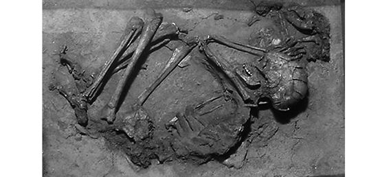
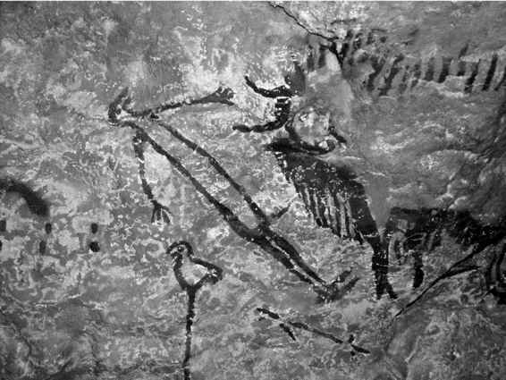

Kapitel 3
Ein Tag im Leben von Adam und Eva
Um unsere Natur, Psyche und Geschichte zu verstehen, müssen wir einen Blick in den Kopf der Jäger und Sammler der Steinzeit werfen. Die Sapiens lebten die längste Zeit ihrer Geschichte als Wildbeuter. Die letzten zwei Jahrhunderte, in denen wir unsere Brötchen als Arbeiter und Angestellte verdienen mussten, und die zehn Jahrtausende davor, in denen wir uns als Bauern und Hirten durchgeschlagen haben, sind nur ein Wimpernschlag im Vergleich zu den Hunderttausenden von Jahren, in denen unsere Vorfahren jagten und sammelten.
Die Vertreter des neuen Gebiets der Evolutionspsychologie nehmen an, dass unsere Gesellschaft und Psyche vor allem während dieser langen Phase vor der Erfindung der Landwirtschaft geprägt wurden. Bis heute sind unsere Gehirne daher auf ein Leben als Jäger und Sammler programmiert. Unsere Ernährungsgewohnheiten, unsere Konflikte und unsere Sexualität ergeben sich aus der Konfrontation unserer Steinzeitgehirne mit der entfremdeten Welt der Megastädte, Flugzeuge, Telefone und Computer. Dieser modernen Umwelt haben wir es zu verdanken, dass wir heute mehr Ressourcen zur Verfügung haben und länger leben als sämtliche unserer Vorfahren, doch dieselbe Umwelt ist auch dafür verantwortlich, dass wir uns oft einsam, deprimiert und gestresst fühlen. Um zu verstehen, warum das so ist, müssen wir uns die Welt der Wildbeuter ansehen, die uns ihren Stempel aufgedrückt hat, denn das ist die Welt, in der wir unbewusst bis heute leben.
Warum werden wir beispielsweise immer dicker? Die modernen Industriegesellschaften leiden unter einer regelrechten Fettepidemie. Wir essen, selbst wenn wir gar keinen Hunger haben. Schlimmer noch, wir können es nie bei einem einzigen Plätzchen belassen und stopfen uns mit den süßesten, fettigsten und kalorienreichsten Lebensmitteln voll, die wir finden können. Die Erklärung dafür sind die Ernährungsgewohnheiten unserer Vorfahren. In ihrer Welt war Zucker ein knappes Gut, so wie jede Form der Nahrung nur unter Mühen zu beschaffen war. Ein typischer Wildbeuter vor 30000 Jahren kannte Süßigkeiten nur in Form von reifen Früchten. Wenn eine Steinzeitfrau bei ihrem Streifzug durch die Savanne auf einen Baum stieß, der sich unter reifen Feigen bog, dann war es nur vernünftig, sich den Magen vollzuschlagen, ehe die Pavianhorde aus der Nachbarschaft den Baum plünderte. Dieser Instinkt, Kalorien in uns hineinzuschaufeln, ist fest in unseren Genen programmiert. Obwohl wir heute in modernen Wohnungen mit gut gefüllten Kühlschränken wohnen, sind unsere Gene überzeugt, dass wir immer noch durch die Savanne streifen. Wenn wir im Gefrierfach einen Kübel Schokoladeneis finden, löffeln wir ihn deshalb auf einen Sitz weg und spülen ihn am besten noch mit einer großen Cola hinunter.
Die Theorie vom »Fress-Gen« wird heute allgemein akzeptiert. Andere Theorien sind dagegen umstrittener. Zum Beispiel behaupten einige Evolutionspsychologen, die Steinzeitmenschen lebten nicht als monogame Paare in Kleinfamilien. Stattdessen organisierten sie sich in Kommunen und kannten weder Privatbesitz noch Monogamie oder Vaterschaft. Damals konnten Frauen mit mehreren Männern (und Frauen) gleichzeitig Beziehungen eingehen. Die Kinder wurden nicht in Kleinfamilien aufgezogen, sondern von der ganzen Gruppe. Da kein Mann wissen konnte, welches Kind von ihm stammte und welches nicht, kümmerten sich die Männer gemeinsam um den gesamten Nachwuchs.
Das ist keine Hippie-Fantasie. Solche und ähnliche Gesellschaftsformen kennen wir von Tieren, vor allem von unseren nächsten Verwandten, den Schimpansen und Bonobos. Anthropologen weisen außerdem darauf hin, dass einige menschliche Kulturen bis heute die kollektive Vaterschaft praktizieren. Nach den Mythen dieser Völker wird ein Kind nicht durch die Spermazelle eines einzelnen Mannes gezeugt, sondern durch eine Ansammlung von Spermien im Bauch der Frau. Eine gute Mutter muss also sehr darauf achten, mit so vielen Männern wie möglich zu schlafen, vor allem während der Schwangerschaft, damit ihr Kind nicht nur die Qualitäten des erfolgreichsten Jägers mitbekommt, sondern auch die des besten Geschichtenerzählers, des mutigsten Kriegers und des attraktivsten Liebhabers. Wir mögen diese Vorstellung albern finden, doch vor der Entwicklung der Embryonenforschung konnte eben noch niemand wissen, dass Kinder immer nur von einem einzigen Mann gezeugt wurden.
Vertreter dieser Theorie der »Ur-Kommune« behaupten, wenn in modernen Ehen die Untreue und die hohe Scheidungsrate ein derartiges Problem darstellen, und wenn Kinder und Erwachsene heute unter zahlreichen psychischen Probleme zu leiden haben, dann liege das daran, dass wir entgegen unserer eigentlichen Natur in Kleinfamilien und monogame Beziehungen gesperrt würden. Diese Lebensform sei schlicht unvereinbar mit unserer biologischen Software.8
Andere Forscher widersprechen dieser Theorie vehement. Sie behaupten, Kleinfamilien und Monogamie seien sehr wohl fest in der menschlichen Natur verankert. Die Gemeinschaften der Jäger und Sammler seien zwar egalitärer und kommunistischer gewesen als unsere heutigen Gesellschaften, doch schon damals seien die kleinsten Einheiten eifersüchtige Paare mit ihren jeweiligen Kindern gewesen. Das sei auch der Grund, warum die meisten Gesellschaften bis heute Kleinfamilien und monogame Beziehungen bevorzugen, warum sich Frauen und Männer so besitzergreifend gegenüber ihren Partnern und Kindern verhielten, und warum in Staaten wie Nordkorea oder Syrien die politische Macht nach wie vor vom Vater auf den Sohn übergehe.
Um herauszufinden, wer in diesem Streit Recht haben könnte, und um unsere moderne Gesellschaft, Politik und Sexualität besser zu verstehen, wollen wir uns das Leben unserer jagenden und sammelnden Vorfahren genauer ansehen.
*
Leider gibt es kaum gesicherte Erkenntnisse über das Leben unserer steinzeitlichen Vorfahren. Die Vertreter der Theorie der »Ur-Kommune« haben genauso wenig handfeste Beweise für ihre Thesen wie die Verfechter der »ewigen Monogamie«. Es gibt keine schriftlichen Überlieferungen aus der Zeit der Jäger und Sammler, und die archäologischen Überreste sind vor allem Knochen und Steinwerkzeuge. Erzeugnisse aus vergänglicheren Materialien wie Holz, Bambus oder Leder haben nur in Ausnahmefällen überlebt. Schon die Vorstellung, dass die Menschen vor der Erfindung der Landwirtschaft in der »Steinzeit« lebten, ist im Grunde ein Irrtum, der auf diesen archäologischen Funden beruht. Genau genommen lebten die Urmenschen nämlich in der »Holzzeit«, denn aus diesem Material stellten sie die meisten ihrer Werkzeuge her. Wenn wir fast ausschließlich Steinwerkzeuge gefunden haben, dann liegt das daran, dass Stein dem Zahn der Zeit besser widersteht als Holz.
Es wäre vermessen zu glauben, dass wir das Leben der Jäger und Sammler anhand der wenigen Gegenstände rekonstruieren könnten, die sie hinterlassen haben. Im Gegensatz zu ihren Nachfahren der Agrar- und Industriegesellschaft hatten die Wildbeuter so gut wie keinen Besitz, und Dinge spielten in ihrem Leben nur eine sehr untergeordnete Rolle. Als Angehörige von modernen Industriegesellschaften besitzen wir im Laufe unseres Lebens Abermillionen von Gegenständen, angefangen von Milchtüten und Windeln bis zu Autos und Häusern. Es gibt kaum eine Tätigkeit, oder Glaubensvorstellung und sogar kaum ein Gefühl, für das wir keine Requisiten benötigen. Allein zum Essen brauchen wir eine verwirrende Anzahl von Gegenständen, und zwar nicht nur Teller und Löffel, sondern auch Genlabors oder Containerschiffe. Für unsere Freizeitbeschäftigungen habe wir eine unüberschaubare Vielfalt von Spielsachen erfunden, angefangen von Spielkarten bis hin zu Fußballstadien mit 100000 Plätzen. Zu unserem Liebesleben gehören Ringe, Betten, modische Kleidung, Reizwäsche, Kondome, Abendessen bei Kerzenschein, billige Hotels, Partnervermittlungen, Hochzeitssäle und Catering-Unternehmen. Moderne Religionen vermitteln uns ihre Götter mithilfe von Kirchen, Moscheen, Aschrams, Torahrollen, Gebetsrädern, Priestergewändern, Kerzen, Weihrauch, Weihnachtsbäumen, Matzebällchen, Grabsteinen und Heiligenbildchen.
Wie sehr wir unser Leben mit Gegenständen zugerümpelt haben, bemerken wir normalerweise erst, wenn wir umziehen. Die Jäger und Sammler zogen fast jeden Tag um und mussten alles, was sie mitnehmen wollten, selbst schleppen. Sie hatten keine Speditionen, Lastwagen und nicht einmal Lasttiere, die ihnen die Bürde abgenommen hätten. Daher begnügten sie sich buchstäblich mit einer Handvoll von Gegenständen und kamen bei den meisten Tätigkeiten, Glaubensvorstellungen und Gefühlen ganz ohne aus. Wenn Archäologen der fernen Zukunft unser heutiges Leben rekonstruieren wollten, dann müssten sie sich nur unseren Wohlstandsmüll ansehen. Aber wenn wir versuchen wollten, die Welt der Wildbeuter anhand der Gegenstände zu verstehen, die sie verwendeten, dann stehen wir von einem Rätsel.
Wenn wir das Schwergewicht auf die Untersuchung von Gegenständen legen, erhalten wir also ein verzerrtes Bild vom Leben der Jäger und Sammler. Um dieses Problem zu umgehen, untersuchen viele Forscher die wenigen Gesellschaften von Jägern und Sammlern, die bis heute überlebt haben. Aber auch das ist nicht so einfach, wie es scheint: Diese Gruppen lassen sich zwar direkt beobachten, doch es wäre sehr problematisch, aus diesen Beobachtungen Rückschlüsse auf die Gesellschaften der Steinzeit ziehen zu wollen.
Erstens stehen die heutigen Gesellschaften von Jägern und Sammlern längst unter dem Einfluss benachbarter Agrar- und Industriegesellschaften. Es wäre daher sehr gewagt anzunehmen, dass sie noch so leben wie ihre Vorfahren vor 30000 Jahren.
Zweitens überlebten die heutigen Gesellschaften von Jägern und Sammlern vor allem in unwirtlichen Regionen mit schwierigen klimatischen Bedingungen, in denen die Landwirtschaft nicht Fuß fassen konnte. Die Völker und Stämme, die sich an die extremen Lebensbedingungen der Kalahariwüste im Süden Afrikas angepasst haben, sind wohl kaum mit den Gesellschaften zu vergleichen, die sich in fruchtbaren Regionen wie dem Jangtse-Tal niederließen. Vor allem ist die Bevölkerungsdichte in der Kalahari deutlich geringer als vor 30000 Jahren am Jangtse, was wiederum weitreichende Auswirkungen auf die Größe und Struktur der einzelnen Gruppen und ihre Beziehungen untereinander hat.
Drittens zeichnen sich Gesellschaften von Jägern und Sammlern vor allem durch ihre Vielfalt aus. Sie unterscheiden sich nicht nur von einem Kontinent zum anderen, sondern schon in derselben Region können die Unterschiede gewaltig sein. Ein gutes Beispiel ist die Vielfalt der australischen Aborigines, wie sie die europäischen Siedler vorfanden. Kurz vor der Kolonialisierung durch die Briten lebten auf dem Kontinent schätzungsweise 300000 bis 700000 Jäger und Sammler in 200 bis 600 Stämmen, von denen sich jeder in weitere Untergruppen unterteilte.9 Jeder Stamm hatte seine Sprache, Religion, Normen und Bräuche. In der Umgebung von Adelaide in Südaustralien lebten beispielsweise patriarchalische Klans, in denen die Familienzugehörigkeit über die Väter weitergegeben wurde und die sich streng territorial organisierten. In vielen Stämmen Nordaustraliens standen dagegen die Mütter im Mittelpunkt, und die Stammeszugehörigkeit wurde über gemeinsame Mythen und Totems definiert, nicht über Territorien.
Die Vermutung liegt nahe, dass die frühen Gesellschaften der Jäger und Sammler eine ähnliche ethnische und kulturelle Vielfalt aufwiesen, und dass sich die fünf bis acht Millionen Menschen, die vor Beginn der landwirtschaftlichen Revolution über unseren Planeten zogen, auf Tausende Stämme mit ebenso vielen Kulturen und Sprachen verteilten.10 Das war schließlich das wichtigste Erbe der kognitiven Revolution: Dank der fiktiven Sprache konnten genetisch weitgehend identische Menschen, die unter ähnlichen Umweltbedingungen lebten, völlig unterschiedliche Wirklichkeiten schaffen, die in eigenständigen Normen und Werten zum Ausdruck kamen.
Es wäre beispielsweise durchaus vorstellbar, dass eine Gruppe von Jägern und Sammlern, die vor 30000 Jahren in Bayern lebte, eine ganz andere Sprache sprach als eine andere, die durch das benachbarte Sachsen streifte. Eine dieser beiden Gruppen könnte friedlich gewesen sein, und die andere extrem kriegerisch. Vielleicht lebten die Bayern in urkommunistischen Gemeinschaften, während die Sachsen die Kleinfamilie bevorzugten. Die Bayern könnten sich darauf verlegt haben, stundenlang Holzfiguren zu schnitzen, während sich die Sachsen auf rituelle Tänze spezialisierten. Möglicherweise glaubten die Bayern an die Wiedergeburt, während die Sachsen dies für Unfug hielten. Und vielleicht waren in Bayern gleichgeschlechtliche Beziehungen die Regel, während sie in Sachsen tabu waren.
Die anthropologische Untersuchung von modernen Jägern und Sammlern kann uns einen ungefähren Eindruck davon vermitteln, welche Möglichkeiten steinzeitlichen Gesellschaften offengestanden haben könnten. Doch vor 30000 Jahren war der Horizont der Möglichkeiten noch deutlich größer, und die allermeisten davon sind für uns heute nicht mehr nachvollziehbar.11 Die hitzigen Debatten um die »natürliche Lebensweise« des Homo sapiens übersieht einen ganz entscheidenden Punkt: Seit der kognitiven Revolution haben wir Sapiens keine natürliche Lebensweise mehr. Wir können lediglich aus einer verwirrenden Vielfalt von kulturellen Möglichkeiten wählen.
Die erste Wohlstandsgesellschaft
Sollte es nicht trotzdem möglich sein, einige allgemeine Aussagen darüber zu treffen, wie das Leben vor der Erfindung der Landwirtschaft ausgesehen haben könnte? Jedenfalls scheint festzustehen, dass die allermeisten Menschen in kleinen Gruppen von einigen Dutzend bis wenigen Hundert Personen lebten, und dass diesen Gruppen ausschließlich Menschen angehörten. Letzteres mag offensichtlich klingen, doch das ist es keineswegs. Die meisten Angehörigen von Agrar- und Industriegesellschaften sind nämlich Haustiere. Sie haben zwar nicht dieselben Rechte, doch sie gehören zweifelsfrei zu diesen Gesellschaften. Die Bevölkerung von Neuseeland besteht beispielsweise aus 4,5 Millionen Sapiens und 50 Millionen Schafen.
Von dieser Regel gibt es allerdings eine Ausnahme: Hunde. Der Hund war das erste Tier, das der Homo sapiens bei sich aufnahm, und zwar lange vor der landwirtschaftlichen Revolution. Experten sind sich nicht ganz einig, wann genau das passiert sein könnte, doch die ersten sicheren Hinweise auf die Existenz von Haushunden sind etwa 15000 Jahre alt. Es ist gut denkbar, dass sich die Hunde dem menschlichen Rudel schon einige Jahrtausende oder Jahrzehntausende früher anschlossen.
Hunde wurden zur Jagd und im Kampf eingesetzt, sie warnten vor wilden Tieren und menschlichen Eindringlingen. Zwischen Hund und Mensch entstand ein Band des Verständnisses und der Zuneigung, das auf Gegenseitigkeit beruhte. Manchmal wurden Hunde ähnlich rituell bestattet wie Menschen. Im Laufe von vielen Generationen entwickelten sich Hunde und Menschen gemeinsam und lernten, miteinander zu kommunizieren. Diejenigen Hunde, die sich am besten auf die Bedürfnisse und Gefühle ihrer menschlichen Begleiter einstellten, erhielten mehr Zuwendung und Futter und vermehrten sich besser. Gleichzeitig lernten Hunde, die Menschen so zu manipulieren, wie es ihren Bedürfnissen entsprach. Nach einem 15000 Jahre dauernden emotionalen Rüstungswettlauf hat der Mensch eine tiefere emotionale Beziehung zum Hund als zu irgendeinem anderen Tier entwickelt.
Die Angehörigen einer Gruppe kannten einander bestens und waren ein Leben lang von Verwandten und Freunden umgeben. Einsamkeit und Privatsphäre waren weitgehend unbekannt. Benachbarte Gruppen konkurrierten vermutlich um Ressourcen und bekämpften einander, aber daneben hatten sie wahrscheinlich auch freundschaftliche Kontakte. Sie tauschten Angehörige aus, jagten gemeinsam, handelten mit seltenen Ressourcen, gingen Bündnisse ein und feierten religiöse Feste. Diese Zusammenarbeit war eines der wichtigsten Merkmale des Homo sapiens, und ihr verdankte er einen Wettbewerbsvorteil gegenüber anderen Menschenarten. Manchmal waren die Bande zwischen benachbarten Gruppierungen so eng, dass sie einen Stamm bildeten, dieselbe Sprache sprachen und gemeinsame Mythen, Normen und Werte hatten.

6. Das erste Haustier? Ein 12000 Jahre altes Grab aus dem Norden Israels (Kibbutz Ma‘ayan Baruch Museum). Darin liegt das Skelett einer etwa fünfzig Jahre alten Frau neben dem eines Hundewelpen (oben rechts). Der Welpe wurde neben dem Kopf der Frau beigesetzt. Ihre linke Hand ruht auf dem Tier, was eine emotionale Beziehung andeuten könnte. Es gibt allerdings auch andere Erklärungen für diese Geste: Das Hündchen könnte auch ein Geschenk für den Türhüter der jenseitigen Welt gewesen sein.
Wir sollten die Bedeutung dieser Außenbeziehungen allerdings nicht überschätzen. Selbst wenn benachbarte Gruppierungen in schwierigen Zeiten ein loses Bündnis eingingen und gelegentlich gemeinsam jagten und feierten, verbrachten sie die meiste Zeit in völliger Abgeschiedenheit und Eigenständigkeit. Der Handel beschränkte sich auf Luxusgüter wie Muscheln, Bernstein oder Farbpigmente. Es gibt keinen Hinweis darauf, dass die Menschen mit Nahrungsmitteln wie Obst oder Fleisch gehandelt haben könnten, oder dass einzelne Gruppen auf die Lieferungen von anderen angewiesen waren. Auch soziale und politische Beziehungen waren eher rar. Der Stamm war keine dauerhafte politische Einrichtung, und selbst wenn er sich zu bestimmten Jahreszeiten an bestimmten Orten einfand, gab es keine festen Siedlungen oder dauerhaften Einrichtungen. Der Durchschnittswildbeuter traf oft Monate lang keinen Fremden und sah im Laufe seines Lebens nur wenige Hundert Gesichter. Die Menschen verteilten sich auf riesige Gebiete. Vor der landwirtschaftlichen Revolution hatte der gesamte Planet weniger menschliche Bewohner als die heutige Schweiz.
Die meisten Menschen waren Nomaden und zogen auf der Nahrungssuche von einem Ort zum anderen. Ihre Wanderungen wurden durch den Wechsel der Jahreszeiten, die Migration von Tieren und den Wachstumszyklus der Pflanzen bestimmt. Auf ihren Wanderungen blieb eine Gruppe meist innerhalb eines festen Gebiets, das einige Dutzend bis einige Hundert Quadratkilometer groß sein konnte.
Gelegentlich verließen die Gruppen jedoch ihr Territorium und erforschten unbekanntes Gebiet, zum Beispiel nach einer Naturkatastrophe, einem blutigen Konflikt oder einer demographischen Veränderung oder auf Initiative eines charismatischen Anführers. Diesen Wanderungen ist es zu verdanken, dass sich die Menschen allmählich über den gesamten Planeten ausbreiteten. Wenn sich eine Gruppe von Jägern und Sammlern alle vierzig Jahre aufspaltete und sich die Splittergruppe hundert Kilometer weiter östlich ein neues Territorium suchte, dann reichte das schon aus, um innerhalb von 10000 Jahren die Entfernung zwischen Ostafrika und China zurückzulegen.
Wenn es irgendwo besonders viel Nahrung gab, dann ließen sich Gruppen ausnahmsweise dort nieder und blieben länger als eine Jahreszeit an einem Ort. Techniken zum Trocknen, Räuchern und (in der Arktis) Einfrieren von Nahrung ermöglichten es ihnen, sich für einen längeren Zeitraum niederzulassen. An Seen und Flüssen mit reichen Fischbeständen siedelten die Menschen auch dauerhaft. Lange vor der landwirtschaftlichen Revolution gründeten sie dort die ersten festen Dörfer der Geschichte. An den Küsten im indonesischen Archipel errichteten Fischer schon vor 45000 Jahren ihre Siedlungen. Diese könnten auch das Basislager gewesen sein, von dem aus der Homo sapiens zu seinen ersten Entdeckungsfahrten in See stach und schließlich Australien eroberte.
*
In den meisten Lebensräumen war die Wirtschaft flexibel und opportunistisch. Die Menschen sammelten Termiten, pflückten Beeren, gruben nach Wurzeln, stellten Hasenfallen auf und jagten Büffel und Mammuts. Die Sammeltätigkeit war in der Regel wichtiger als die Jagd und deckte den größten Teil des Rohstoff- und Kalorienbedarfs. Beim Sammeln und Jagen verwendeten die Menschen Werkzeuge, zum Beispiel Speere, Fallen und Grabstöcke. Außerdem benutzten sie Kleidung: Die Eroberung der Arktis wurde nur durch die Erfindung von Thermobekleidung aus Leder und Fell möglich.
Aber die Menschen sammelten nicht nur Nahrung und Rohstoffe, sondern auch Wissen. Ohne eine detaillierte Kenntnis der Umgebung hätten sie nicht überlebt. Um ihre tägliche Nahrungssuche möglichst effizient zu gestalten, benötigten sie Informationen über das Wachstum aller Pflanzen und die Verhaltensmuster sämtlicher Tiere. Sie mussten den Wechsel der Jahreszeiten verstehen und Hinweise auf einen drohenden Sturm oder eine bevorstehende Trockenzeit erkennen. Jeder Angehörige der Gruppe musste ein Steinmesser herstellen, ein zerrissenes Kleidungsstück flicken, eine Hasenfalle aufstellen, einer Lawine entgehen und mit Schlangenbissen und hungrigen Löwen fertigwerden können. Es gab keinen Laden, in dem das Lebensnotwendige einkaufen und keinen Notruf, den sie im Ernstfall anrufen konnten. Um ihre Fähigkeiten zu erlernen, benötigten sie Jahre der Lehre und Übung. Jeder Jäger konnte innerhalb weniger Minuten aus einem Feuerstein eine Speerspitze fertigen. Wenn moderne Wissenschaftler es ihnen nachmachen wollen, scheitern sie in der Regel kläglich: Sie wissen nicht, wie welcher Basalt oder Feuerstein bricht und sie haben vor allem nicht die Feinmotorik, die nötig ist, um derart präzise zu arbeiten.
Die Jäger und Sammler hatten also sehr viel gründlichere, umfassendere und vielfältigere Kenntnisse über ihre Umwelt als die meisten ihrer modernen Nachfahren. In unserer Industriegesellschaft braucht man zum Überleben nicht allzu viele Fähigkeiten. Was müssen wir denn schon mitbringen, um als Informatiker, Versicherungsvertreter, Geschichtslehrer oder Fließbandarbeiter überleben zu können? Natürlich erwerben wir eine Menge Spezialkenntnisse auf einem klar definierten Gebiet, doch bei der Befriedigung der allermeisten Bedürfnisse verlassen wir uns blind auf andere Experten, die sich genau wie wir auf ein winziges Fachgebiet spezialisiert haben. Als Kollektiv wissen wir heute natürlich viel mehr als diese Gruppen von Urmenschen. Aber für sich genommen waren die Jäger und Sammler die klügsten und geschicktesten Menschen der Geschichte.
Wir wissen heute, dass das durchschnittliche Sapiens-Gehirn seit Beginn der landwirtschaftlichen Revolution geschrumpft ist.12 Um als Jäger und Sammler zu überleben, mussten die Menschen über hervorragende geistige Fähigkeiten verfügen. Mit der Landwirtschaft und der Industrie konnten sich unsere Vorfahren zunehmend auf die Fähigkeiten der anderen verlassen, und es öffneten sich Nischen für weniger talentierte Menschen: Zur Not konnte man sich irgendwie als Wasserträger oder Hilfsarbeiter durchschlagen und so seine Gene an die nächste Generation weitergeben.
Wildbeuter hatten nicht nur ein besseres Verständnis ihrer belebten und unbelebten Umwelt, sondern auch ihrer eigenen Innenwelt, ihres Körpers und ihrer Sinne. Sie hörten das leiseste Geräusch im Gras, weil es sich um eine Schlange handeln könnte. Mit scharfem Blick beobachteten sie das Laub von Bäumen, um Früchte, Bienenstöcke oder Vogelnester zu erspähen. Sie bewegten sich mit einem Minimum an Krafteinsatz und Lärm und verstanden es, geschickt und effizient zu sitzen, zu gehen und zu laufen. Durch den vielfältigen Einsatz ihres Körpers waren sie fit wie ein Marathonläufer. Sie hatten eine körperliche Flexibilität, wie wir sie heute nur erreichen, wenn wir jahrelang Yoga oder Tai-Chi praktizieren.
*
Das Leben der Jäger und Sammler konnte sich je nach Region und Jahreszeit ganz erheblich unterscheiden, doch im Großen und Ganzen bekommt man den Eindruck, dass sie ein sehr viel angenehmeres Leben führten als die meisten Bauern, Schäfer, Landarbeiter und Büroangestellten, die ihnen folgten. Während die Menschen in den heutigen Wohlstandsgesellschaften zwischen 40 und 45 Stunden pro Woche arbeiten, und in den Ländern der Dritten Welt sogar zwischen 60 und 80, kommen die Wildbeuter selbst in den unwirtlichsten Gegenden der Welt – zum Beispiel der Kalahari-Wüste – im Durchschnitt auf nur 35 bis 40 Arbeitsstunden pro Woche. Sie jagen höchstens jeden dritten Tag und die Sammeltätigkeit nimmt pro Tag lediglich drei bis sechs Stunden in Anspruch. In normalen Zeiten reicht das völlig aus, um die gesamte Gruppe zu ernähren. Es ist sehr wahrscheinlich, dass die steinzeitlichen Jäger und Sammler in fruchtbaren Regionen deutlich weniger Zeit benötigten, um Nahrung und Rohstoffe heranzuschaffen. Außerdem hatte sie deutlich weniger Hausarbeit: Sie mussten kein Geschirr spülen, keine Teppiche saugen, keine Böden schrubben, keine Windeln wechseln und keine Rechnungen zahlen.
In der Wirtschaft der Wildbeuter gab es viel spannendere Berufe als in der Landwirtschaft oder der Industrie. Eine chinesische Fabrikarbeiterin geht morgens um sieben Uhr aus dem Haus, hastet durch die schmutzigen Straßen in einen öden Sweatshop, setzt sich an eine Maschine, verrichtet dort zehn Stunden lang den immergleichen Handgriff, kommt abends gegen sieben Uhr nach Hause und muss noch Geschirr spülen und die Wäsche waschen – tagein, tagaus, jeden Tag dasselbe. Vor 30000 Jahren hätte eine chinesische Wildbeuterin gegen acht Uhr morgens mit ihren Begleitern das Lager verlassen. Die Gruppe streifte durch die nahe gelegenen Wälder, sammelte Pilze, grub essbare Wurzeln aus, fing Frösche und lief vor Tigern davon. Am frühen Nachmittag waren sie wieder zurück im Lager, bereiteten eine Mahlzeit zu, unterhielten sich, spielten mit den Kindern und ruhten sich aus. Natürlich wurden sie hin und wieder von Tigern gefressen und von Schlangen gebissen, aber dafür blieben sie von Autounfällen und Smog verschont.
Die Kost, die sie sammelten und jagten, war ideal. Was an sich kein Wunder ist, denn die Menschen hatten sich Jahrmillionen lang von nichts anderem ernährt und ihre Körper waren genau darauf eingestellt. Aus Fossilienfunden wissen wir, dass die Wildbeuter seltener unter Hunger und Mangelernährung litten und größer und gesünder waren als ihre bäuerlichen Nachfahren. Die durchschnittliche Lebenserwartung lag zwar nur bei dreißig bis vierzig Jahren, doch das war vor allem der hohen Kindersterblichkeit geschuldet. Wer die gefährdeten ersten Lebensjahre überstand, hatte beste Chancen, sechzig, siebzig oder sogar achtzig Jahre alt zu werden. Unter heutigen Wildbeutern hat eine 45-jährige Frau gute Aussichten, weitere zwanzig Jahre lang zu leben, und rund 5 bis 8 Prozent der Bevölkerung sind über sechzig Jahre alt.13
Das Erfolgsgeheimnis der Jäger und Sammler, das sie vor Hungertod und Mangelernährung bewahrte, war ihre vielseitige Ernährung. Bauern leben in der Regel von einer sehr einseitigen Kost. Vor allem in vormodernen Zeiten deckte die Landbevölkerung ihren Kalorienbedarf überwiegend mit einer einzigen Nutzpflanze, zum Beispiel Weizen, Kartoffeln oder Reis, die jeweils nur einen kleinen Teil der Vitamine, Mineralien und anderen Nährstoffe enthalten, die der menschliche Körper benötigt. Wildbeuter ernährten sich dagegen aus Dutzenden verschiedenen Quellen. Dank dieser Vielfalt erhielten sie eine ausgewogene Ernährung und waren weniger anfällig gegenüber Umwelteinflüssen. In einer landwirtschaftlichen Gesellschaft, die auf eine einzige Nutzpflanze angewiesen ist, konnten Dürren oder Überschwemmungen und der nachfolgende Ausfall der Weizen- oder Kartoffelernte leicht zu Hungersnöten führen, denen große Teile der Bevölkerung zum Opfer fielen. Die Jäger und Sammler waren zwar auch anfällig für die Widrigkeiten der Natur und kannten Zeiten des Mangels und des Hungers, doch in der Regel bewältigten sie diese erheblich besser. Wenn eines ihrer Grundnahrungsmittel ausfiel, konnten sie einfach eine andere Pflanze sammeln, ein anderes Tier jagen oder in eine weniger stark betroffene Gegend ausweichen.
Die steinzeitlichen Wildbeuter litten außerdem weniger unter Infektionskrankheiten. Die meisten ansteckenden Krankheiten, mit denen sich landwirtschaftliche und industrialisierte Gesellschaften herumschlagen müssen (zum Beispiel Pocken, Masern oder Tuberkulose) stammen ursprünglich von Haustieren und wurden erst nach der landwirtschaftlichen Revolution auf den Menschen übertragen. Die Jäger und Sammler, die sich höchstens ein paar Hunde hielten, blieben von diesen Geißeln verschont. Dazu kam, dass die Menschen in Agrar- und Industriegesellschaften in beengten und schmutzigen Verhältnissen lebten – eine ideale Brutstätte für Krankheiten. Wildbeuter streiften dagegen in kleinen Gruppen umher, in denen sich keine Epidemien halten konnten.
*
Wegen ihrer ausgewogenen und vielseitigen Kost, ihrer kurzen Arbeitszeiten und ihrer gesunden Lebensweise bezeichnen Historiker die Wildbeuter der Steinzeit gern als »die erste Wohlstandsgesellschaft«. Trotzdem sollten wir das Leben dieser Jäger und Sammler nicht durch eine rosarote Brille sehen. Sie lebten zwar besser als die meisten Menschen in Agrar- und Industriegesellschaften, doch ihre Welt konnte hart und erbarmungslos sein. Zeiten der Entbehrung waren nicht selten, die Kindersterblichkeit war hoch, und ein Unfall, etwa ein Sturz von einem Baum, konnte einem Todesurteil gleichkommen. Die meisten Menschen genossen vermutlich die Intimität der umherziehenden Gruppe, doch die Unglücklichen, die sich die Feindschaft oder den Spott der anderen zuzogen, hätten Sartre beigepflichtet, als er sagte, »die Hölle, das sind die anderen«. Auch heute lassen Jäger und Sammler ihre Alten und Kranken oft zurück oder töten sie, weil sie nicht mehr mit der Gruppe mithalten können. Unerwünschte Neugeborene und Kleinkinder werden getötet, und gelegentlich kommt es auch zu religiösen Menschenopfern.
Die Aché, die bis in die 1960er Jahre als Jäger und Sammler durch die Urwälder von Paraguay streiften, vermitteln einen Eindruck von den Licht- und Schattenseiten des Lebens der Wildbeuter. Wenn ein angesehenes Mitglied der Gruppe starb, töteten die Aché traditionell ein Mädchen und bestatteten die beiden zusammen. Anthropologen beschrieben einen Fall, in dem ein Mann mittleren Alters krank wurde und nicht mehr mit den anderen Schritt halten konnte. Die Gruppe ließ ihn unter einem Baum zurück. Über ihm kreisten schon die Geier in freudiger Erwartung einer herzhaften Mahlzeit. Zu ihrem Leidwesen erholte sich der Mann jedoch wieder, eilte der Gruppe nach und schloss sich ihr wieder an. Da er über und über mit dem Kot der Aasfresser bedeckt war, nannte ihn die Gruppe danach nur noch »Geierschiss«.
Wenn alte Frauen der Gruppe zur Last fielen, schlich sich ein junger Mann von hinten an sie heran und erschlug sie mit einer Axt. Einer der Männer erzählte den neugierigen Anthropologen von seinen besten Jahren im Urwald. »Ich habe immer die alten Frauen umgebracht. Ich habe meine Tanten erschlagen … Die Frauen hatten Angst vor mir … Hier, bei den Weißen, bin ich schwach geworden. Ich habe viele alte Frauen umgebracht.« Kinder, die ohne Haare zur Welt kamen, galten als unterentwickelt und wurden sofort getötet. Eine Frau erinnerte sich, dass ihr erstes Baby umgebracht wurde, weil die Männer der Gruppe keine Mädchen mehr wollten. Bei einer anderen Gelegenheit erschlug ein Mann einen kleinen Jungen, »weil er immer schlecht gelaunt war und oft weinte«. Ein anderes Kind wurde lebendig begraben, »weil es komisch aussah und die anderen Kinder es gehänselt haben«.14
Trotzdem sollten wir nicht vorschnell über die Aché urteilen. Anthropologen, die lange Jahre bei ihnen lebten, berichten, es sei ausgesprochen selten zu Gewalt zwischen Erwachsenen gekommen. Frauen und Männer konnten nach Belieben ihre Partner wechseln. Sie lächelten und lachten unaufhörlich, hatten keine Anführer und mieden herrschsüchtige Stammesgenossen. Sie waren ausgesprochen großzügig und hatten kein Interesse an Erfolg oder Wohlstand. Harmonisches Zusammenleben und gute Freundschaften waren ihnen wichtiger als alles andere im Leben.15 Für sie war die Tötung von Kindern, Kranken und Alten nichts anderes als für uns Abtreibung oder Sterbehilfe. In diesem Zusammenhang sollten wir nicht vergessen, dass die Aché von den Bauern der Region grausam verfolgt und ermordet wurden. Es kann durchaus sein, dass sie aufgrund der Notwendigkeit, sich vor ihren Feinden zu verstecken und zu fliehen, extrem erbarmungslos gegen Angehörige vorgingen, die eine Gefahr für den Rest der Gruppe darstellen konnten.
In Wahrheit war die Gesellschaft der Aché, genau wie jede andere menschliche Gesellschaft, ausgesprochen komplex. Es wäre deshalb nicht angebracht, sie zu idealisieren oder zu verdammen. Die Aché waren weder Engel noch Teufel, sondern Menschen. Genau wie die Jäger und Sammler der Steinzeit.
Sprechende Geister
Was wissen wir vom geistigen und religiösen Leben der Jäger und Sammler? Die Ökonomie der Wildbeuter lässt sich noch relativ leicht rekonstruieren, da wir es mit mess- und zählbaren Faktoren zu tun haben. Wir können errechnen, wie viele Kalorien ein Mensch pro Tag zum Überleben benötigte, wie viele Kalorien in einem Kilogramm Walnüsse stecken, und wie viele Walnüsse sich durchschnittlich in einem Quadratkilometer Wald sammeln lassen. Aber galt die Walnuss als besonderer Leckerbissen oder wurde sie einfach mitgegessen? Glaubten die Wildbeuter, dass in den Walnussbäumen Geister lebten? Gefielen ihnen die Blätter des Walnussbaums? Wenn ein Junge ein Mädchen an einen romantischen Ort entführen wollte, suchte er dann den Schatten eines Walnussbaums? Die Welt der Gedanken, Glaubensvorstellungen und Gefühle ist ungleich schwerer zu fassen.
Die meisten Forscher sind sich einig, dass unter den Jägern und Sammlern animistische Vorstellungen vorherrschten. Animismus (vom lateinischen Wort anima, das »Seele« oder »Geist« bedeutet) ist die Vorstellung, dass die Welt von beseelten Wesen bewohnt wird, die miteinander kommunizieren können. Animisten glauben, dass fast jeder Ort, jedes Tier, jede Pflanze und jedes Naturphänomen ein Bewusstsein und Empfindungen hat. Sie können beispielsweise überzeugt sein, dass ein großer Fels auf der Spitze eines Berges Gefühle, Wünsche und Bedürfnisse hat. Der Fels könnte sich zum Beispiel über eine Handlung der Menschen ärgern und über eine andere freuen. Er könnte die Menschen unterstützen oder um Gefälligkeiten bitten. Die Menschen wiederum können mit dem Felsen sprechen und ihn besänftigen oder ihm drohen. Nicht nur der Fels ist ein beseeltes Wesen, sondern auch die Eiche unterhalb des Felsens, der Bach am Fuße des Hügels, die Quelle auf der Lichtung, verschiedene Büsche, Kräuter, Mäuse, Wölfe, Vögel und so weiter. Daneben wird die Welt von den Geistern der Toten und einer Vielzahl von körperlosen Wesen bevölkert, die später Dämonen, Feen und Engel heißen sollten.
Für Animisten gibt es keine feste Grenze zwischen Menschen und anderen Lebewesen. Sie kommunizieren direkt durch Sprache, Gesang, Tanz und Ritual mit ihnen. Ein Jäger kann zum Beispiel eine Herde von Hirschen ansprechen und sie bitten, dass sich einer von ihnen opfert. Wenn die Jagd erfolgreich verläuft, kann er das getötete Tier um Vergebung bitten. Wenn jemand krank wird, kann ein Medium mit dem Geist sprechen, der die Krankheit verursacht hat, und ihn besänftigen oder vertreiben. Wenn nötig, kann das Medium andere Geister um Hilfe bitten. Dabei sind die angerufenen Geister ganz spezifische Wesen: Es handelt sich nicht um universelle Götter, sondern um einen ganz bestimmten Hirsch, Baum, Fluss oder Geist.
Es gibt nicht nur keine feste Grenze zwischen Menschen und anderen Wesen, es gibt auch keine Hierarchie. Die nicht-menschlichen Wesen sind nicht nur dazu da, um die Bedürfnisse der Menschen zu befriedigen. Sie sind auch keine allmächtigen Götter, die die Welt ganz nach ihrem Gutdünken lenken. Die Welt dreht sich weder um den Menschen noch um irgendein anderes Wesen.

7. Ausschnitt einer 15000 bis 20000 Jahre alten Zeichnung aus der Lascaux-Höhle. Was genau sehen wir hier, und was bedeutet diese Zeichnung? Einige Wissenschaftler behaupten, es handele sich um einen Mann mit Vogelkopf und erigiertem Glied, der von einem Bison getötet wird. Unter dem Mann befindet sich ein weiterer Vogel. Dieser Vogel sei die Seele des Mannes, die im Moment des Todes den Körper verlässt. Die Szene stelle keinen einfachen Jagdunfall dar, sondern den Übergang der Seele von einer Welt in die nächste. Wir werden jedoch nie wissen, ob diese Spekulationen stimmen oder nicht. Es handelt sich um eine Art Rohrschach-Test, der mehr über die Vorurteile der modernen Wissenschaftler aussagt als über die Glaubensvorstellungen der steinzeitlichen Jäger und Sammler.
Animismus ist keine spezifische Religion. Es handelt sich vielmehr um einen Überbegriff für Tausende verschiedene Religionen, Kulte und Glaubensvorstellungen, die sich untereinander ganz erheblich unterscheiden können. Das Gemeinsame ist ihre Sicht der Welt und der Rolle des Menschen in ihr. Wenn wir sagen, dass die meisten Jäger und Sammler Animisten sind, dann besagt das nicht mehr als die Aussage, dass die meisten Bauern Theisten sind. Theismus ist die Vorstellung, dass die Ordnung der Welt auf einem hierarchischen Verhältnis zwischen den Menschen und einer kleinen Gruppe von körperlosen Wesen namens Göttern basiert. Es stimmt zwar, dass die meisten bäuerlichen Gesellschaften an Götter glauben, aber das sagt noch nichts über die genauen Inhalte der Religion aus. Unter dem Oberbegriff »Gottesglauben« finden sich die jüdischen Rabbiner aus dem Polen des 18. Jahrhunderts genauso wieder wie die hexenjagenden Puritaner aus dem Massachusetts des 17. Jahrhunderts, die Aztekenpriester aus dem Mexiko des 15. Jahrhunderts, die Sufi-Mystiker aus dem Iran des 12. Jahrhunderts, die Wikinger des 10. Jahrhunderts, die römischen Legionäre des 2. Jahrhunderts und die chinesischen Bürokraten des 1. Jahrhunderts. Zwischen den Glaubensvorstellungen und Praktiken dieser Gruppen liegen Welten, und genauso groß waren vermutlich die Unterschiede zwischen den religiösen Vorstellungen der verschiedenen Jäger und Sammler-Kulturen. Es kann gut sein, dass sie nicht nur sehr verschiedene Religionen hatten, sondern dass jede einzelne Religion auch ihre Richtungsstreitigkeiten, Reformen und Revolutionen kannte.
8. Jäger und Sammler hinterließen diese Abdrücke vor rund 9000 Jahren in der »Höhle der Hände« in Argentinien. Es wirkt, als würden uns diese längst verstorbenen Menschen aus dem Fels heraus die Hände reichen wollen. Es handelt sich um eines der bewegendsten Zeugnisse aus der alten Welt der Wildbeuter. Leider weiß niemand, welchen Sinn diese Zeichnungen hatten.
Über diese vorsichtigen Verallgemeinerungen hinaus können wir leider nur sehr wenig sagen. Jeder Versuch, die religiösen Vorstellungen der Jäger und Sammler detaillierter zu beschreiben, wäre pure Spekulation, da wir kaum Beweise haben und sich die wenigen Indizien – eine Handvoll Gegenstände und bruchstückhafte Höhlenmalereien – in tausenderlei Weise interpretieren lassen. Wenn Wissenschaftler trotzdem Theorien aufstellen, dann verraten diese oft mehr über ihre eigenen Sehnsüchte und Vorurteile als über die Religionen der Steinzeit.
Statt auf der Grundlage von einigen Grabbeigaben, Höhlenzeichnungen und Knochenfigürchen hochfliegende Theoriegebäude zu errichten, sollten wir ehrlich zugeben, dass wir nur sehr ungefähre Vorstellungen von den Religionen der steinzeitlichen Jäger und Sammler haben. Wir nehmen zwar an, dass sie Animisten waren, doch auch das sagt noch reichlich wenig aus. Wir wissen nicht, welche Geister sie anriefen, welche Feste sie feierten oder welche Tabus sie einhielten. Vor allem wissen wir nicht, welche Mythen sie sich erzählten. Es ist eine der größten Lücken in unserem Verständnis der menschlichen Geschichte.
*
Auch über die sozio-politischen Verhältnisse in der Zeit der Jäger und Sammler wissen wir so gut wie nichts. Wie wir gesehen haben, können sich Wissenschaftler nicht einmal in grundlegenden Fragen wie dem Privateigentum, der Kleinfamilie oder der Monogamie einigen. Vermutlich gab es auch hier ganz erhebliche Unterschiede von einer Gruppe zur nächsten. Es ist gut denkbar, dass einige in einer kommunistischen Utopie lebten, während ihre Nachbarn streng hierarchisiert waren.
Im russischen Sungir entdeckten Archäologen die etwa 30000 Jahre alte Grabstätte einer Kultur von Mammutjägern. In einem Grab fanden sie die Überreste eines rund 50 Jahre alten Mannes, der mit Ketten von Elfenbeinperlen behängt war. Insgesamt lagen in dem Grab etwa 3000 dieser Perlen. Auf dem Kopf trug der Mann eine mit Fuchszähnen geschmückte Mütze und an den Armen 25 Armreifen aus Elfenbein. Andere Gräber derselben Stätte enthielten deutlich weniger Beigaben. Daraus schlossen die Archäologen, dass die Mammutjäger von Sungir eine hierarchische Gesellschaft gewesen sein müssen, und dass der Verstorbene der Anführer einer Gruppe oder sogar eines aus mehreren Gruppen bestehenden Stammes war. Es war sehr unwahrscheinlich, dass eine einzige Gruppe mit einigen Dutzend Angehörigen derart viele Grabbeigaben hergestellt haben sollte.
Dann entdeckten die Archäologen ein Grab, das noch faszinierender war. Hier lagen zwei Skelette, die Kopf an Kopf begraben worden waren. Eines gehörte einem zwölf oder dreizehn Jahre alten Jungen, das andere einem etwa neun- oder zehnjährigen Mädchen, dessen Hüfte schwere Deformationen aufwies. Der Junge war mit 5000 Elfenbeinperlen bedeckt und trug eine Mütze mit 250 Fuchszähnen (um auf so viele Fangzähne zu kommen, mussten mindestens 60 Füchse getötet werden). Das Mädchen war mit 5250 Elfenbeinperlen geschmückt. Um die Kinder herum lagen Figürchen und andere Gegenstände aus Elfenbein. Die Wissenschaftler schätzten, dass ein geschickter Schnitzer zur Fertigung einer einzigen Elfenbeinperle etwa 45 Minuten benötigte. Allein für die Herstellung der mehr als 10000 Perlen in dem Grab der Kinder hätte ein geübter Handwerker also rund 7500 Stunden oder drei Arbeitsjahre benötigt.
Es ist recht unwahrscheinlich, dass sich diese beiden Kinder in ihren jungen Jahren als heldenhafte Anführer oder Mammutjäger bewiesen hatten. Die einzige Erklärung für ein derart extravagantes Begräbnis sind kulturelle Vorstellungen. Einer Theorie zufolge hatten sie ihren Status ihren Eltern zu verdanken. Vielleicht waren es die Kinder des Anführers, und vielleicht glaubte die Kultur an das Charisma der Familie oder hatte strenge Erbfolgeregeln. Nach einer zweiten Theorie galten diese Kinder von Geburt an als heilig, vielleicht weil sie die Wiedergeburt verstorbener Geister waren. Und eine dritte Theorie behauptete schließlich, die Bestattung sage eher etwas über den Tod der Kinder und nichts über ihren Status im Leben aus: Sie seien rituell geopfert worden – möglicherweise im Zusammenhang mit den Bestattungsritualen für den Anführer – und dann mit großem Pomp und Prunk beigesetzt worden.16
Wir werden vermutlich nie wissen, was wirklich passierte. Doch die Kinder von Sungir sind der beste Beweis dafür, dass Sapiens schon vor 30000 Jahren in der Lage war, sozio-politische Verhaltensweisen zu erfinden, die weit über das Diktat der Gene und die starren Verhaltensmuster von Tieren und anderen Menschenarten hinausgingen.
Krieg oder Frieden?
Und dann ist da noch die heikle Frage nach dem Krieg. Einige Wissenschaftler beschreiben die Welt der Jäger und Sammler als Paradies und behaupten, Krieg und Frieden begannen erst mit der landwirtschaftlichen Revolution, als die Menschen anfingen, Privatbesitz anzuhäufen. Andere Wissenschaftler beschreiben die steinzeitliche Welt dagegen als ausgesprochen grausam und blutig. Beide Theorien sind Luftschlösser, die auf mageren archäologischen Funden und der Beobachtung moderner Jäger und Sammler errichtet werden.
So verlockend die Erkenntnisse moderner Anthropologen sind, sie sind mit Vorsicht zu genießen. Die heutigen Wildbeuter leben vor allem in entlegenen und unwirtlichen Regionen wie der Arktis oder der Kalahari, wo die Bevölkerungsdichte gering und die Wahrscheinlichkeit einer Begegnung mit Feinden entsprechend klein ist. Vor allem unterstehen die Jäger und Sammler in den vergangenen Jahrzehnten zunehmend der staatlichen Aufsicht, die den Ausbruch großer Konflikte unterbindet. Nur zweimal hatten Anthropologen die Möglichkeit, große und relativ dichte Populationen von unabhängigen Jägern und Sammlern zu beobachten: Im 19. Jahrhundert im Nordwesten Nordamerikas und im 19. und frühen 20. Jahrhundert in Nordaustralien. Auf beiden Kontinenten berichteten die Anthropologen von zahlreichen bewaffneten Konflikten zwischen Gruppen von Wildbeutern.
Auch die archäologischen Funde sind rar und nur bedingt aussagekräftig. Welche Hinweise gibt es, dass vor 30000 Jahren irgendwo ein Krieg stattgefunden haben könnte? Damals gab es keine Festungen und Mauern, keine Granaten und Schwerter. Aus heutiger Sicht lässt sich nicht mehr sagen, ob ein Speer zur Jagd oder im Krieg verwendet wurde. Fossile Knochenfunde sind genauso schwer zu deuten. Ein Knochenbruch könnte genauso gut von einem Unfall herrühren wie von menschlicher Gewalt. Umgekehrt ist das Fehlen von Knochenverletzungen noch kein Beweis für einen friedlichen Tod: Der Betroffene könnte aber auch an Fleischwunden gestorben sein, die keine Spuren am Skelett hinterlassen haben. Dazu kommt, dass vor der Industrialisierung rund 90 Prozent aller Kriegsopfer nicht durch Waffeneinwirkung, sondern durch Hunger, Kälte und Krankheit ums Leben kamen. Stellen wir uns vor, dass vor 30000 Jahren eine Gruppe eine andere besiegte und aus den begehrten Jagdgründen vertrieb. Im entscheidenden Kampf werden zehn Angehörige des unterlegenen Stamms getötet. Im folgenden Jahr sterben weitere Hundert an Hunger, Kälte und Krankheiten. Wenn Archäologen diese 110 Skelette finden, kommen sie vermutlich zu dem Schluss, dass die meisten von einer Naturkatastrophe dahingerafft wurden. Wer käme schon auf den Gedanken, dass sie Opfer eines erbarmungslosen Krieges geworden sein könnten?
Nach dieser Warnung können wir uns nun den archäologischen Funden zuwenden. In Portugal wurden vierhundert Skelette aus der Zeit unmittelbar vor der landwirtschaftlichen Revolution untersucht. Nur zwei davon zeigten eindeutige Spuren der Gewalteinwirkung. In Israel wurde bei einer Untersuchung von ebenfalls vierhundert Skeletten nur ein einziger Schädelbruch entdeckt, der sich auf menschliche Gewalt zurückführen ließ.
Bei einer Untersuchung von vierhundert Skeletten aus dem Donautal fanden Wissenschaftler 18 Fälle von Gewalteinwirkung. Auch das mag noch überschaubar klingen, in Wirklichkeit ist es jedoch eine ganze Menge. Wenn tatsächlich alle 18 eines gewaltsamen Todes gestorben sind, dann würde das hochgerechnet bedeuten, dass rund 4,5 Prozent aller Menschen im Donautal von ihren Mitmenschen ins Jenseits befördert wurden. Heute liegt der Durchschnitt weltweit bei 1,5 Prozent, Kriege und Verbrechen zusammengenommen. Im gesamten 20. Jahrhundert starben nur rund 5 Prozent aller Menschen eines gewaltsamen Todes – und das trotz zweier Weltkriege, eines chinesischen Bürgerkriegs, des Holocausts, des Völkermords an den Armeniern und Dutzender anderer Kriege und Völkermorde von Kambodscha bis zum Kongo, von Vietnam bis Ruanda. Das Donautal der Steinzeit war offenbar genauso blutig wie das 20. Jahrhundert.17
Die schaurigen Funde aus dem Donautal werden durch eine Reihe ähnlich deprimierender Entdeckungen in anderen Regionen gestützt. Im sudanesischen Jebel Sahaba wurde ein 12000 Jahre alter Friedhof mit 59 Skeletten gefunden. In 24 Fällen (oder 40 Prozent der Toten) wurden Pfeil- und Speerspitzen in oder neben den Knochen gefunden. Das Skelett einer Frau wies zwölf Verletzungen auf. In den Ofnethöhlen am Kraterrand des Nördlinger Ries fanden Archäologen 33 Schädel, vor allem von Frauen und Kindern, die in zwei Gruben geworfen worden waren. Die Hälfte der Schädel, auch die der Kinder und Säuglinge, wiesen eindeutige Hieb- und Stichspuren auf. Die wenigen Schädel der älteren Männer waren am schlimmsten zugerichtet. Mit großer Wahrscheinlichkeit war hier eine ganze Gruppe von Wildbeutern massakriert worden.
Aber was entspricht denn nun der Welt der steinzeitlichen Jäger und Sammler: die friedlichen Skelette aus Israel und Portugal oder die Schlachthöfe von Jebel Sahaba und der Ofnethöhlen? Die Antwort lautet: Weder das eine noch das andere. Genau wie sich die Jäger und Sammler hinsichtlich ihrer Religionen und gesellschaftlichen Strukturen erheblich unterschieden, gab es offenbar auch große Differenzen bei der Gewalt. Einige Regionen scheinen in Frieden und Harmonie gelebt zu haben, andere scheinen von blutigen Konflikten heimgesucht worden zu sein.18
Der Vorhang des Schweigens
Es ist schon schwierig genug, die großen Muster der Steinzeitwelt zu erkennen, doch einzelne Ereignisse lassen sich so gut wie gar nicht mehr rekonstruieren. Wann immer eine Gruppe von Sapiens in einem Tal eintraf, das von Neandertalern bewohnt wurde, könnten sich in den folgenden Jahren atemberaubende historische Tragödien abgespielt haben. Leider ist von diesen Begegnungen nichts übrig geblieben als ein paar Knochen und eine Handvoll Werkzeuge, die trotz intensiver wissenschaftlicher Untersuchung schweigen. Aus ihnen können wir Schlüsse über die menschliche Anatomie, Technologie, Ernährung und vielleicht sogar Gesellschaftsstruktur ziehen. Aber sie verraten uns nichts über Bündnisse zwischen benachbarten Sapiens-Gruppen, über die Geister der Toten, die diese Bündnisse segneten, oder über die Elfenbeinperlen, die dem Geisterbeschwörer zugesteckt wurden, um das Wohlwollen der Geister zu erhalten.
Hinter diesem Vorhang des Schweigens verbergen sich Zehntausende Jahre Menschheitsgeschichte. Diese gewaltigen Zeiträume könnten die Bühne für unzählige Kriege und Revolutionen, religiöse Erweckungsbewegungen, tiefe philosophische Debatten und beispiellose Kunstwerke gewesen sein. Glorreiche Napoleons könnten Reiche von der Größe Liechtensteins erobert haben. Geniale Beethovens könnten ihr Publikum mit einer Bambusflöte zu Tränen gerührt haben. Visionäre Mohammeds könnten die Worte einer Eiche am Fluss verkündet haben. Aber das alles wäre pure Spekulation. Der Vorhang des Schweigens ist so undurchdringlich, dass wir nicht einmal wissen können, ob solche Dinge wirklich passiert sind, und noch viel weniger können wir sie im Detail beschreiben.
Wissenschaftler stellen meist nur solche Fragen, die sie mit einiger Sicherheit auch beantworten können. Solange sie nicht in eine Zeitmaschine steigen oder die Geister der Steinzeit heraufbeschwören, werden wir wohl nie herausfinden, was die Jäger und Sammler glaubten oder welche politischen Dramen ihre Welt erschütterten. Trotzdem ist es wichtig, Fragen zu stellen, auf die es keine Antworten gibt. Andernfalls wäre die Versuchung groß, 60000 oder 70000 Jahre der Menschheitsgeschichte einfach unter den Teppich zu kehren und zu sagen, »die Menschen, die damals lebten, haben nichts geleistet, was für uns heute von Bedeutung wäre«.
Denn in Wirklichkeit haben sie eine Menge wichtiger Dinge geleistet. Sie haben nicht nur unser Denken und Fühlen geprägt, das uns bis heute bestimmt, sondern auch unsere gesamte Umwelt. Abenteuerurlauber, die in die sibirische Tundra, die zentralaustralischen Wüsten oder den Amazonasregenwald kommen, glauben oft, dass sie eine »unberührte Natur« betreten, in die nie zuvor ein Mensch seinen Fuß gesetzt hat. Doch das ist eine Illusion. Die Jäger und Sammler waren lange vor uns da und haben selbst den dichtesten Urwald und die einsamste Wildnis in dramatischer Weise gestaltet. Im nächsten Kapitel sehen wir uns an, wie die Wildbeuter die Ökologie unseres Planeten von Grund auf veränderten, lange bevor sie ihr erstes Dorf errichteten. Die umherziehenden Gruppen brandrodender und geschichtenerzählender Sapiens waren die größte und zerstörerischste Kraft, die das Tierreich je hervorgebracht hat.
8 Christopher Ryan und Cacilda Jethá, Sex at Dawn: The Prehistoric Origins of Modern Sexuality (New York: Harper, 2010).
9 Noel G. Butlin, Economics and the Dreamtime: A Hypothetical History (Cambridge: Cambridge University Press, 1993), S. 98–101; Richard Broome, Aboriginal Australians (Sydney: Allen & Unwin , 2002), S. 15; William Howell Edwards, An Introduction to Aboriginal Societies (Wentworth Falls, N.S.W.: Social Science Press, 1988), S. 52.
10 Fekri A. Hassan, Demographic Archaeology (New York: Academic Press, 1981), S. 196–99; Lewis Robert Binford, Constructing Frames of Reference: An Analytical Method for Archaeological Theory Building Using Hunter Gatherer and Environmental Data Sets (Berkeley: University of California Press, 2001), S. 143.
11 Mit dem »Horizont von Möglichkeiten« ist das gesamte Spektrum von Glaubensvorstellungen, Praktiken und Erfahrungen gemeint, die einer bestimmten Gesellschaft angesichts ihrer ökologischen, technischen und kulturellen Grenzen offenstehen. Jede Gesellschaft und jeder Mensch verwirklicht üblicherweise nur einen Bruchteil dieser Möglichkeiten.
12 Paul Seabright, The Company of Strangers: A Natural History of Economic Life (Princeton: Princeton University Press, 2004), 261 n. 2; M. Henneberg und M. Steyn, »Trends in Cranial Capacity and Cranial Index in Subsaharan Africa During the Holocene«, American Journal of Human Biology 5:4 (1993): S. 473–79.
13 Nicholas G. Blurton Jones u. a., »Antiquity of Postreproductive Life: Are There Modern Impact on Hunter-Gatherer Postreproductive Life Spans?«, American Journal of Human Biology 14 (2002), S. 184–205.
14 Kim Hill und A. Magdalena Hurtado, Aché Life History: The Ecology and Demography of a Foraging People (New York: Aldine de Gruyter, 1996), 164, 236.
15 Hill and Hurtado, Aché Life History, S. 78.
16 Vincenzo Formicola und Alexandra P. Buzhilova, »Double Child Burial from Sunghir (Russia): Pathology and Inferences for Upper Paleolithic Funerary Practices«, American Journal of Physical Anthropology 124:3 (2004), S. 189–98; Giacomo Giacobini, »Richness and Diversity of Burial Rituals in the Upper Paleolithic«, Diogenes 54:2 (2007), S. 19–39.
17 Dem könnte man entgegenhalten, dass die 18 Bewohner des Donautals möglicherweise nicht an den Auswirkungen der Gewalt starben, deren Spuren sich an ihren Skeletten fanden. Einige wurden vielleicht nur verletzt. Diese Zahl wiegt jedoch vermutlich die Zahl derjenigen auf, die an Fleischwunden und sonstigen unsichtbaren Kriegsfolgen starben.
18 I. J. N. Thorpe, »Anthropology, Archaeology, and the Origin of Warfare«, World Archaology 35:1 (2003), S. 145–65; Raymond C. Kelly, Warless Societies and the Origin of War (Ann Arbor: University of Michigan Press, 2000); Azar Gat, War in Human Civilization (Oxford: Oxford University Press, 2006); Lawrence H. Keeley, War before Civilization: The Myth of the Peaceful Savage (Oxford: Oxford University Press, 1996); Slavomil Vencl, »Stone Age Warfare«, in Ancient Warfare: Archaeological Perspectives, hrg. v. John Carman und Anthony Harding (Stroud: Sutton Publishing, 1999), S. 57–73.